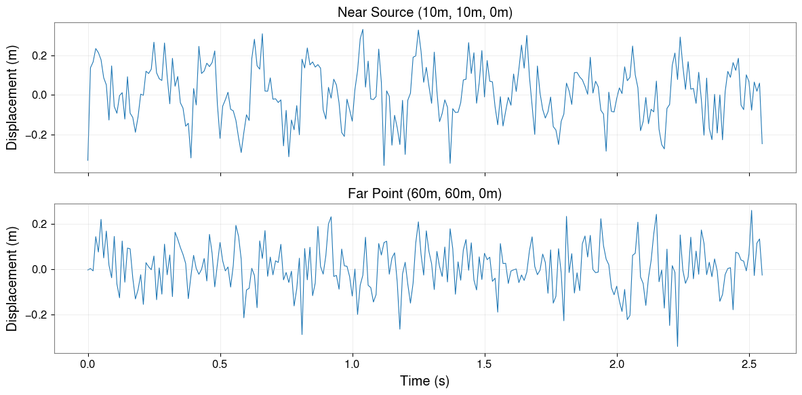

Note
このページは Jupyter Notebook から生成されました。 ノートブックをダウンロード (.ipynb)
Field × 高度解析ワークフロー

このチュートリアルでは、ScalarField と高度な時間-周波数解析手法を組み合わせた実践的なワークフローを紹介します。
学べること
ScalarField から時系列データを抽出して解析する
HHT、STLT、Wavelet 変換を適用する
解析済みデータを Field 構造に再構成する
FieldList を使ったバッチ処理
ユースケース：地震アレイ解析
各空間点が時間変動する地動を記録する3次元地震アレイを解析します。
[1]:
# Suppress warnings
import warnings
import matplotlib.pyplot as plt
import numpy as np
from astropy import units as u
from gwexpy.fields import FieldList, ScalarField
from gwexpy.timeseries import TimeSeries
warnings.filterwarnings('ignore')
ステップ 1：合成地震フィールドの作成
3次元グリッドを伝搬する地震波による地動をシミュレートします。
[2]:
# Parameters
nt, nx, ny, nz = 256, 8, 8, 4 # 256 time samples, 8×8×4 spatial grid
fs = 100 # Hz
duration = nt / fs
# Create axis coordinates
t_axis = np.arange(nt) * (1/fs) * u.s
x_axis = np.arange(nx) * 10.0 * u.m # 10m spacing
y_axis = np.arange(ny) * 10.0 * u.m
z_axis = np.arange(nz) * 5.0 * u.m # 5m depth spacing
# Simulate seismic wave (P-wave + surface wave)
data = np.zeros((nt, nx, ny, nz))
# P-wave (bulk wave, faster)
v_p = 3000 # m/s
f_p = 10 # Hz
for ix in range(nx):
for iy in range(ny):
for iz in range(nz):
# Distance from source (corner)
dist = np.sqrt(x_axis[ix].value**2 + y_axis[iy].value**2 + z_axis[iz].value**2)
delay = dist / v_p
t_vals = t_axis.value
# P-wave with geometric spreading
amplitude_p = 1.0 / (dist + 1)
data[:, ix, iy, iz] += amplitude_p * np.sin(2*np.pi*f_p * (t_vals - delay)) * (t_vals > delay)
# Surface wave (slower, stronger)
v_s = 1500 # m/s
f_s = 5 # Hz
for ix in range(nx):
for iy in range(ny):
dist_surf = np.sqrt(x_axis[ix].value**2 + y_axis[iy].value**2)
delay_s = dist_surf / v_s
amplitude_s = 2.0 / (dist_surf + 1)
data[:, ix, iy, 0] += amplitude_s * np.sin(2*np.pi*f_s * (t_vals - delay_s)) * (t_vals > delay_s)
# Add noise
data += np.random.randn(*data.shape) * 0.1
# Create ScalarField
field_seismic = ScalarField(
data,
axis0=t_axis,
axis1=x_axis,
axis2=y_axis,
axis3=z_axis,
axis_names=['t', 'x', 'y', 'z'],
unit=u.m, # Ground displacement
name='Seismic Field',
)
print(f"Created seismic field: {field_seismic.shape}")
print(f"Time span: {duration:.2f} s")
print(f"Spatial extent: {nx*10}m × {ny*10}m × {nz*5}m")
Created seismic field: (256, 8, 8, 4)
Time span: 2.56 s
Spatial extent: 80m × 80m × 20m
ステップ 2：解析用の TimeSeries 抽出
特定の空間位置から時系列データを抽出し、詳細な解析を行います。
[3]:
# Extract time-series at corner (near source) and far point
slice_near = field_seismic[:, 1, 1, 0] # Near source (keeps 4D structure)
slice_far = field_seismic[:, 6, 6, 0] # Far from source
# Convert point-slices to 1D TimeSeries
times = slice_near.axis(0).index
ts_near = TimeSeries(slice_near.value[:, 0, 0, 0], times=times, unit=slice_near.unit, name='Near source')
ts_far = TimeSeries(slice_far.value[:, 0, 0, 0], times=times, unit=slice_far.unit, name='Far point')
# Plot
fig, axes = plt.subplots(2, 1, figsize=(12, 6), sharex=True)
axes[0].plot(ts_near.times.value, ts_near.value, linewidth=0.8)
axes[0].set_ylabel('Displacement (m)')
axes[0].set_title('Near Source (10m, 10m, 0m)')
axes[0].grid(True, alpha=0.3)
axes[1].plot(ts_far.times.value, ts_far.value, linewidth=0.8)
axes[1].set_ylabel('Displacement (m)')
axes[1].set_xlabel('Time (s)')
axes[1].set_title('Far Point (60m, 60m, 0m)')
axes[1].grid(True, alpha=0.3)
plt.tight_layout()
plt.show()
print('Extracted TimeSeries for analysis')

Extracted TimeSeries for analysis
ステップ 3：STLT による減衰検出
Short-Time Laplace Transform を用いて、地震信号の減衰率を特定します。
[4]:
# Apply STLT to detect damping (geometric spreading + attenuation)
stlt_result = ts_far.stlt(fftlength=1.0, overlap=0.5)
print(f"STLT result shape: {stlt_result.shape}")
print("Use STLT to identify decay rates (σ) at different frequencies (ω)")
print("Note: Actual visualization would show σ-ω plane with decay rate information")
STLT result shape: (4, 1, 51)
Use STLT to identify decay rates (σ) at different frequencies (ω)
Note: Actual visualization would show σ-ω plane with decay rate information
ステップ 4：FieldList によるバッチ処理
FieldList を使用して、複数の空間スライスを並列的に処理します。
[5]:
# Extract horizontal slices at different depths
slices_at_depths = [
field_seismic[:, :, :, iz] for iz in range(nz)
]
# Create FieldList
field_list = FieldList(slices_at_depths)
print(f"Created FieldList with {len(field_list)} depth slices")
print(f"Each slice shape: {field_list[0].shape}")
# Batch operation: compute PSD at each depth
# (This would be a real batch operation in practice)
print("\nBatch processing workflow:")
print(" 1. Extract slices → FieldList")
print(" 2. Apply transform → [field.fft_time() for field in field_list]")
print(" 3. Aggregate results → stack or average")
print(" 4. Reconstruct Field → combine processed slices")
Created FieldList with 4 depth slices
Each slice shape: (256, 8, 8, 1)
Batch processing workflow:
1. Extract slices → FieldList
2. Apply transform → [field.fft_time() for field in field_list]
3. Aggregate results → stack or average
4. Reconstruct Field → combine processed slices
ステップ 5：処理済みデータからの Field 再構成
解析後、4次元構造を維持するために Field 構造を再構成します。
[6]:
# Example: FFT in time, then reconstruct
field_freq = field_seismic.fft_time()
print(f"Frequency-domain field: {field_freq.shape}")
print(f"Axis0 domain: {field_freq.axis0_domain}")
print(f"Space domains: {field_freq.space_domains}")
# Inverse transform
field_reconstructed = field_freq.ifft_time()
# Verify reconstruction
max_error = np.max(np.abs(field_seismic.value - field_reconstructed.value))
print(f"\nReconstruction error: {max_error:.2e} m")
print("4D structure preserved through FFT → IFFT cycle ✓")
Frequency-domain field: (129, 8, 8, 4)
Axis0 domain: frequency
Space domains: {'x': 'real', 'y': 'real', 'z': 'real'}
Reconstruction error: 1.78e-15 m
4D structure preserved through FFT → IFFT cycle ✓
まとめ：Field × 高度解析のベストプラクティス
ワークフローパターン
ScalarField (4D)
↓ 抽出
TimeSeries (1D) → 高度解析 (HHT, STLT, Wavelet)
↓ 結果
メトリクス / 特徴量
↓ 集約
ScalarField (4D) ← 再構成
主要テクニック
抽出:
field[:, x, y, z].to_timeseries()でポイント解析バッチ処理: FieldList で並列操作
変換サイクル:
fft_time()→ 処理 →ifft_time()で4D構造を保持スライシング: 単一インデックス選択時でも4D構造を維持
手法の使い分け
ポイント解析: TimeSeries を抽出し、HHT/STLT/Wavelet を適用
空間パターン:
fft_space()で K空間解析バッチ操作: FieldList で複数の実現値を処理
全4D変換:
fft_time()+fft_space()で周波数-波数解析